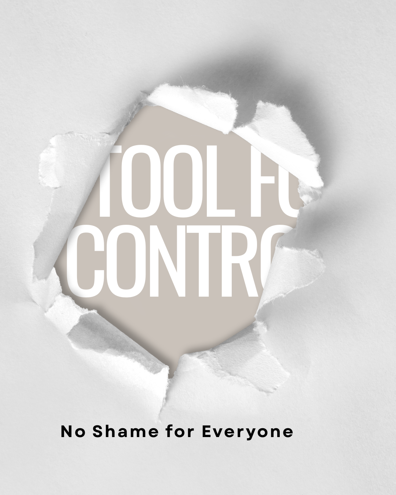

By Alvaro Castro
I used to be chunky. Then I lost the weight. And through that journey, I noticed something important:
The word "fat" isn't always used to describe—it’s often used to regulate.
It’s not about bullying outright. Sometimes the person using it isn’t even trying to be hurtful. But the result is still the same: the word triggers emotion. And that emotional response becomes a control switch.
Let’s dig into why that happens—what science says about labeling, emotional response, and personal responsibility—and how fat shaming is less about concern and more about power.
There are solids, liquids, and gases. There are muscular bodies, skinny bodies, and fat bodies. So why does “fat” provoke so much more emotion than “tall” or “short”?
Simple: because our culture has assigned moral value to it.
Calling someone "fat" only becomes “shaming” if the receiver associates the word with failure, loss of control, or embarrassment. But where did that link come from?
Social construction.
Decades of media, advertising, and pseudo-medical narratives have programmed us to believe that fat = undisciplined, lazy, weak. As if carrying extra body mass automatically signals a flaw in character.
This is called moralization—a psychological process where neutral traits are assigned ethical value. One study from Harvard noted how modern societies often treat health-related behaviors (like eating or exercising) as moral obligations, not personal choices. When weight becomes a moral metric, calling someone “fat” turns into a judgment, even unintentionally.
Here’s where it gets deeper: shaming isn’t about honesty. It’s about compliance.
When people shame others—especially in the name of “health” or “truth”—what they’re often doing is asserting a social norm. Psychologist Erving Goffman’s work on social stigma explains that when individuals fail to meet socially valued attributes (like thinness), they are devalued, prompting pressure to conform.
This pressure isn’t always aggressive. It can be subtle. Quiet. Even disguised as concern.
But the goal is the same: to make people modify behavior, appearance, or expression to avoid being ostracized.
So if you’re not emotionally impacted by being called “fat,” you’re immune to that control switch. And that, ironically, makes you powerful.
Here’s the controversial part: labeling only creates shame when the receiver internalizes it.
That’s not victim blaming—it’s psychology.
Cognitive appraisal theory tells us that our emotional responses are driven by how we interpret a stimulus. If you see the word “fat” as just a descriptor—no different than “blue-eyed”—you won’t feel insulted.
So when someone is hurt by the label, it’s often because they’ve been conditioned to feel that hurt. Maybe they’ve tried and failed to lose weight. Maybe they’ve faced rejection or bullying in the past. The emotional wound isn’t about the word—it’s about the unresolved internal narrative behind it.
That doesn’t mean people should go around labeling others. But it does mean we need to stop pretending that all emotional reactions are the fault of the speaker. Personal interpretation matters.
Some people argue: “But it’s just a fact. If someone’s fat, they’re fat.” And that’s true. But facts don’t live in vacuums.
A 2015 study published in Obesity Reviews found that people with higher internalized weight bias were significantly more likely to experience anxiety, depression, and disordered eating. That means the shame isn’t coming from others—it’s coming from within.
So calling someone “fat” isn’t necessarily damaging—unless it triggers those internal biases.
What we’re seeing is less about bullying and more about identity crisis.
Nope.
If it were, people would show the same concern for underweight individuals, binge drinkers, smokers, or those who neglect sleep. But they don’t—because most of those don’t trigger visible non-conformity.
Fatness is easy to spot. And because it’s visible, it becomes a target for social regulation.
In truth, health is complex. Some overweight people have better metabolic health than their leaner counterparts. And as researchers have pointed out, focusing on weight alone often leads to weight cycling—yo-yo dieting that’s far worse for long-term health than stable, higher weight.
Fat shaming isn't always an act of cruelty. Sometimes it's a reflex. Sometimes it's social conditioning. Sometimes it's masked as "truth."
But at the end of the day, shame only sticks if you believe it.
If you don’t internalize the label—if you don’t let someone’s comment define your worth—it loses its power. It becomes just a word. Like tall. Like short. Like lean. Like fat.
You get to decide what triggers you. That’s real control.